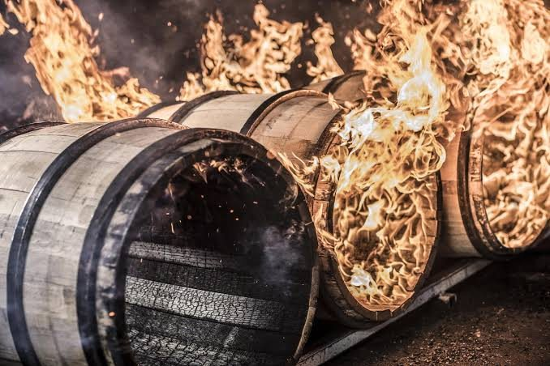

In a competitive global spirits market, standard bourbon or sherry casks often give predictable results. To stand out with connoisseurs and support premium price points, craft distilleries are increasingly turning to custom-seasoned and re-charred casks.
Re-shaving and re-charring to revive a cask
Ex-bourbon casks that have given up most of their active wood compounds can be mechanically shaved back to fresh oak and re-charred. This revives vanillin and caramelised wood sugars, which can significantly shorten maturation times for micro-distilleries.
Beyond wine: specialty seasoning with Pu-erh tea
Cask seasoning now goes well beyond sherry and port. Seasoning casks with specialised liquids — such as 20-year-old Pu-erh tea, developed with cooperage specialists — gives the spirit deep herbal and earthy layers and a point of difference few others can match. Our Monlanchum release is one example.
Positioning limited releases
Specialised, limited-run seasoning casks give a finished spirit a flavour and a story that generic stock cannot. Collectors actively look for distinctive wood interactions, which can support ultra-premium positioning and higher price points for a limited release.
Next steps
See our specialty and hybrid casks, or talk to us about a custom seasoning project.